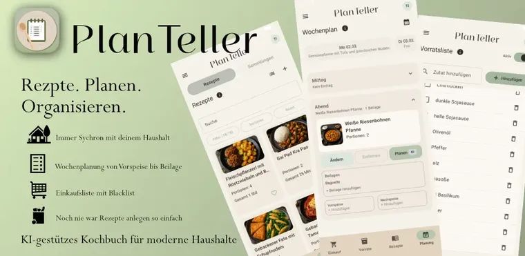
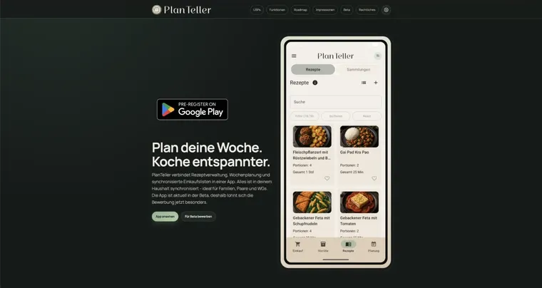
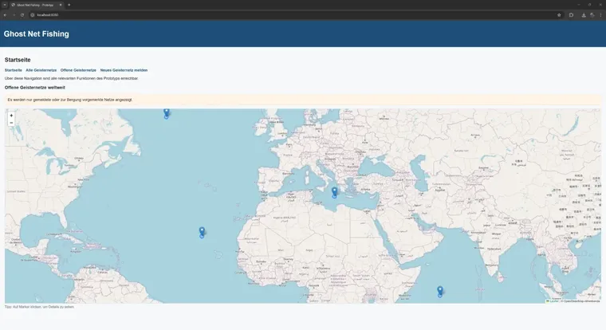

PlanTeller
Eine Android App rund ums Kochen, Planen und Organisieren von Rezepten mit Unterstützung durch KI.
Eine Auswahl technischer und kreativer Projekte aus Studium, eigener Entwicklung und kleinen Experimenten. Viele davon entstehen Schritt für Schritt und wachsen mit neuen Ideen weiter.

Eine Android App rund ums Kochen, Planen und Organisieren von Rezepten mit Unterstützung durch KI.


Eine Fallstudie aus dem Studium über das Problem von Geisternetzen und eine digitale Lösungsidee für die Bergung und Meldung.
Ich freue mich über Austausch, neue Ideen und spannende Herausforderungen.
Lass uns sprechen